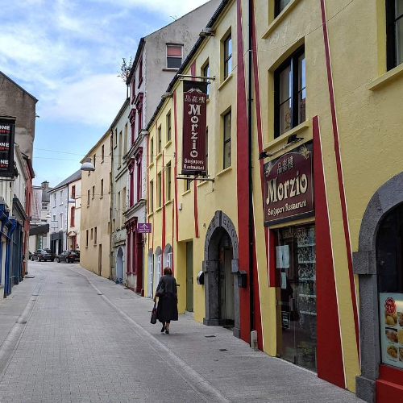
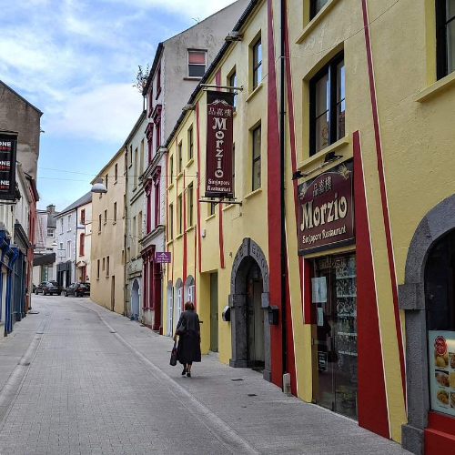

Waterford is a vibrant city located in the southeastern part of Ireland. It is the oldest city in the country, founded by the Vikings in the 9th century, and holds a rich history that is evident in its architecture and cultural heritage. With a population of around 54,000, Waterford offers a mix of historical landmarks, natural beauty, artistic endeavors, and a warm Irish welcome. The city is renowned for its intricate crystal craftsmanship. Waterford Crystal, one of the most famous crystal manufacturers in the world, has its origins here. Visitors can tour the Waterford Crystal Visitor Centre to witness the exquisite artistry and learn about the history and techniques behind crystal production. The center also features a retail store where visitors can purchase stunning crystal pieces. Waterford's natural surroundings provide ample opportunities for outdoor activities. The city is situated on the banks of the River Suir, offering picturesque waterfront views and opportunities for river cruises and water-based adventures. Nearby, the Comeragh Mountains provide hiking and trekking trails, rewarding visitors with stunning vistas and hidden lakes. In summary, Waterford offers a charming blend of history, culture, natural beauty, artistic expression, and warm Irish hospitality. From exploring its Viking past and admiring crystal craftsmanship to immersing in the local food and music scene, visitors to Waterford are sure to have an enriching and memorable experience.